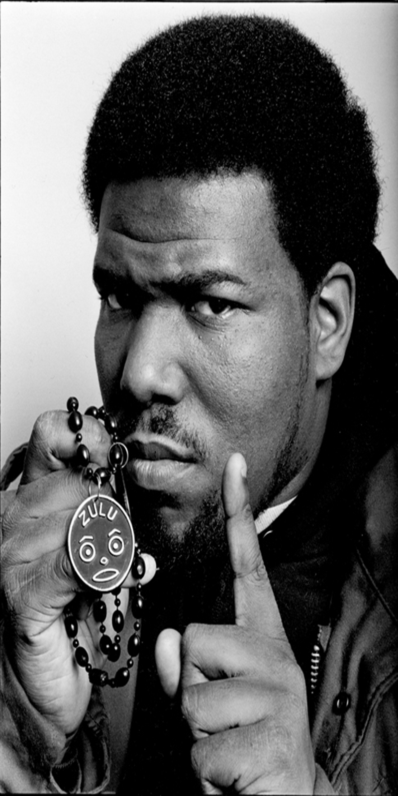

Лэнс Тейлор (англ. Lance Taylor, род. 17 апреля 1957 года, Бронкс, Нью-Йорк), более известный под сценическим псевдонимом Afrika Bambaataa (с англ.«Африка Бамбаатаа») — американский диджей, певец, автор песен и музыкальный продюсер.
Он известен выпуском серии треков в стиле электро в 1980-х годах, которые повлияли на развитие хип-хоп культуры. Африка Бамбаатаа является одним из основателей брейкбит диджеинга и с уважением известен как «Крёстный отец» и «Амон-Ра хип-хоп культуры», а также отец электро-фанка. Своим кооптированием уличной банды Black Spades в музыкальную и культурно-ориентированную организацию Universal Zulu Nation он помог распространить хип-хоп культуру по всему миру.
6 мая 2016 года Бамбаатаа покинул свой пост главы The Zulu Nation из-за многочисленных заявлений о сексуальном насилии над детьми, начиная с 1970-х годов.
Вдохновлённый DJ Kool Herc и Kool DJ Dee, Бамбаатаа стал ведущим на хип-хоп вечеринках, начиная с 1977 года. Он пообещал, что будет использовать хип-хоп с целью вытащить детей из банд и сформировал Universal Zulu Nation (с англ.«Всемирная Зулусская Нация»). Считается, что именно Роберт Кит Уиггинс, также известный как Cowboy из группы Grandmaster Flash and the Furious Five, придумал термин «хип-хоп» в 1978 году; термин стал общей фразой, используемой MC как часть стиля быстрого рифмования. В документальном фильме Just To Get A Rep (2004), писатель Стивен Хагер утверждает, что в первый раз термин «хип-хоп» был использован именно им в его статье в газете Village Voice, где он цитировал Бамбаатаа, который в интервью называет культуру «хип-хопом». Статья была написана весной 1982 года, однако вышла она спустя полгода, 21 сентября 1982 года, под названием «Afrika Bambaataa’s Hip Hop» и становится первым упоминанием хип-хопа в прессе. Также Стивен Хагер написал сценарий культового ныне фильма о хип-хопе Beat Street (1984).
В 1982 году Бамбаатаа и его последователи, группа танцоров, артистов, и ди-джеев, вышли за пределы Соединённых Штатов, организовав первый хип-хоп тур. Он видел, что хип-хоп туры будут ключом, чтобы помочь расширить хип-хоп и его организацию Universal Zulu Nation. Кроме того, это поможет продвигать ценности хип-хопа, которые, по его мнению, основаны на мире, единстве, любви, и весёлом времяпрепровождении. Он принёс мир в банды; многие артисты и члены банд говорят, что «хип-хоп спас много жизней». Его влияние вдохновило многих зарубежных артистов, таких как французский рэпер MC Solaar.. Он был популярным ди-джеем рэп сцены в Южном Бронксе и стал известен не только как Afrika Bambaataa, но и как «Master Of Records». Он основал две рэп команды: The Jazzy 5, в которую входили MC: Master Ice, Mr. Freeze, Master Bee, Master D.E.E, и AJ Les, а вторая команда известна как Soulsonic Force, в которую входили Mr. Biggs, Pow Wow и Emcee G.L.O.B.E.
В 1982 году Тейлор, вдохновлённый футуристической электронной музыкой группы Kraftwerk, дебютировал на сцене Нью-Йоркского клуба The Roxy с виниловым синглом «AEIOU Sometimes Y» новаторской группы EBN-OZN. Это был первый коммерчески выпущенный американский сингл, когда-либо сделанный на компьютере, Fairlight CMI, открывший эру сэмплирования музыки на компьютерах. В том же году Бамбаатаа и Soulsonic Force отказались от живой группы, чтобы заняться высокими технологиями. Бамбаатаа назвал вдохновляющей новаторскую японскую электропоп группу Yellow Magic Orchestra, чьи работы он сэмплировал. Он также позаимствовал звук клавишных у немецких пионеров электронной музыки, Kraftwerk, и получил электронный «бит-бокс», сделанный на драм-машине Roland TR-808, от продюсера Артура Бейкера и клавишника Джона Роби. В результате появилась песня «Planet Rock», которая получила золотой статус и породила целую школу «электро-буги» рэпа и танцевальной музыки. Бамбаатаа создал свой собственный лейбл, чтобы выпустить сборник Time Zone. Он создал «тёрнтейблизм» как собственный поджанр и ратифицировал «электронику» как сертифицированную индустрией тенденцию в конце 1990-х годов.